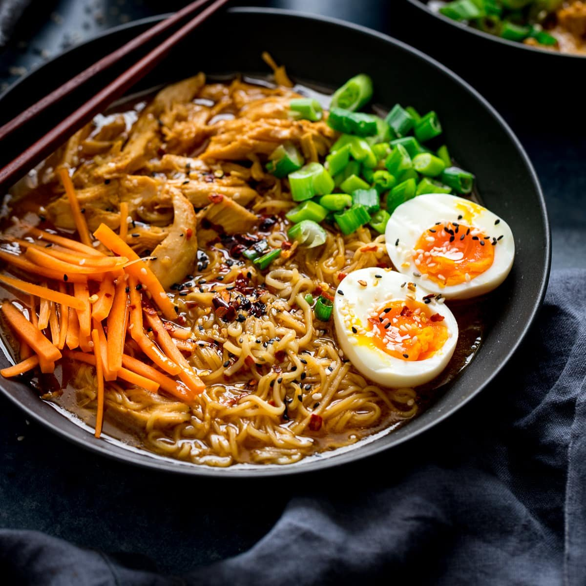
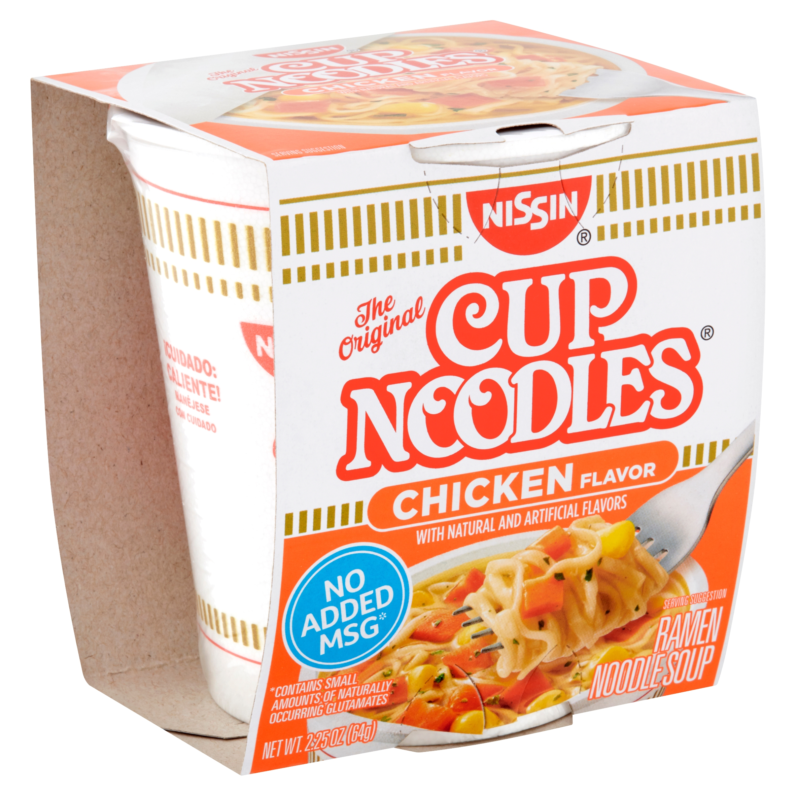
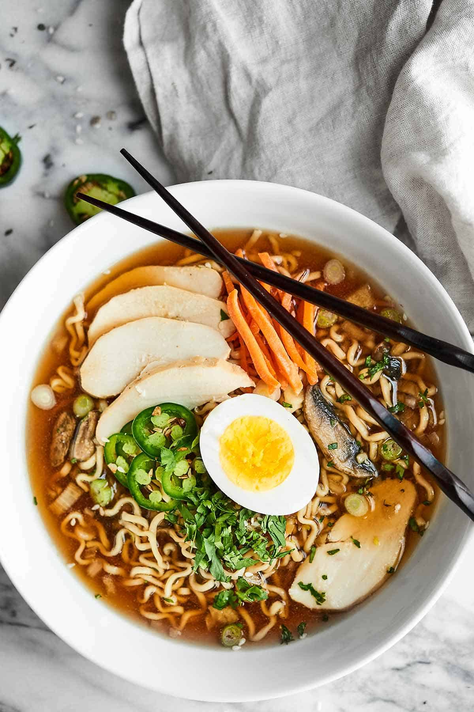

Ramen (/ˈrɑːmən/) is a Japanese noodle soup. It consists of Chinese-style wheat noodles served in a meat or (occasionally) fish-based broth, often flavored with soy sauce or miso, and uses toppings such as sliced pork (叉焼, chāshū), nori (dried seaweed), menma, and scallions. Nearly every region in Japan has its own variation of ramen, such as the tonkotsu (pork bone broth) ramen of Kyushu, and the miso ramen of Hokkaido. Mazemen is a ramen dish that is not served in a soup, but rather with a sauce (such as tare).

Instant Ramen

Instant ramen noodles were exported from Japan by Nissin Foods starting in 1971, bearing the name "Oodles of Noodles". One year later, it was re-branded "Nissin Cup Noodles", packaged in a foam food container (It is referred to as Cup Ramen in Japan), and subsequently saw a growth in international sales. Over time, the term "ramen" became used in North America to refer to other instant noodles. While some research has claimed that consuming instant ramen two or more times a week increases the likelihood of developing heart disease and other conditions, including diabetes and stroke, especially in women, those claims have not been reproduced and no study has isolated instant ramen consumption as an aggravating factor. Instant ramen noodles, known to have a serving of 43 g, consist of very high sodium. At least 1,760 mg of sodium are found in one packet alone. It consists of 385k calories, 55.7 g of carbohydrates, 14.5 g of total fat, 6.5 g of saturated fat, 7.9 g of protein, and 0.6 mg of thiamine.
In Popular Culture
-
Movies
In the 1985 film Tampopo, A truck driver, Goro, helps a woman called Tampopo create the perfect ramen restaurant. Ramen and how it is made was the subject of the 2008 feature film The Ramen Girl, starring Brittany Murphy.
-
Emoji
In October 2010, an emoji was approved for Unicode 6.0 U+1F35C 🍜 STEAMING BOWL for "Steaming Bowl", that depicts Japanese ramen noodles in a bowl of steaming broth with chopsticks. In 2015, the icon was added to Emoji 1.0.
-
Museum
The Shin-Yokohama Rāmen Museum is a unique museum about ramen, in the Shin-Yokohama district of Kōhoku-ku, Yokohama.
Toppings

-
Chāshū (sliced barbecued or braised pork)
-
Negi (green onion)
-
Takana-zuke (Pickled and seasoned mustard leaves)
-
Seasoned (usually salted) boiled egg (Soy egg ("Ajitsuke Tamago"))
-
Bean or other sprouts
-
Menma (lactate-fermented bamboo shoots)
-
Kakuni (braised pork cubes or squares)
-
Kikurage (wood ear mushroom)
-
Nori (dried seaweed)
-
Kamaboko (formed fish paste, often in a pink and white spiral called narutomaki)
-
Squid
-
Umeboshi (pickled plum)
-
Corn
-
Butter
-
Wakame (a type of seaweed)
-
Olive oil
-
Sesame oil
-
Soy sauce
-
Other types of vegetables
Regional Variations
-
Sapporo, the capital of Hokkaido, is especially famous for its ramen. Most people in Japan associate Sapporo with its rich miso ramen, which was invented there and which is ideal for Hokkaido's harsh, snowy winters. Sapporo miso ramen is typically topped with sweetcorn, butter, bean sprouts, finely chopped pork, and garlic, and sometimes local seafood such as scallop, squid, and crab. Hakodate, another city of Hokkaido, is famous for its salt flavored ramen, while Asahikawa in the north of the island offers a soy sauce-flavored variation. In Muroran, many ramen restaurants offer Muroran curry ramen.
-
Tokyo-style ramen consists of slightly thin, curly noodles served in a soy-flavored chicken broth. The Tokyo style broth typically has a touch of dashi, as old ramen establishments in Tokyo often originate from soba eateries. Standard toppings are chopped scallion, menma, sliced pork, kamaboko, egg, nori, and spinach. Ikebukuro, Ogikubo and Ebisu are three areas in Tokyo known for their ramen.
-
Wakayama ramen in the Kansai region has a broth made from soy sauce and pork bones.
-
Hakata ramen originates from Hakata district of Fukuoka city in Kyushu. It has a rich, milky, pork-bone tonkotsu broth and rather thin, non-curly and resilient noodles. Often, distinctive toppings such as crushed garlic, beni shōga (pickled ginger), sesame seeds, and spicy pickled mustard greens (karashi takana) are left on tables for customers to serve themselves. Ramen stalls in Hakata and Tenjin are well known within Japan. Recent trends have made Hakataramen one of the most popular types in Japan, and several chain restaurants specializing in Hakata ramen can be found all over the country.
-
Kitakata ramen is known for its rather thick, flat, curly noodles served in a pork-and-niboshi broth. The area within the former city limits has the highest per-capita number of ramen establishments. Ramen has such prominence in the region that locally, the word soba usually refers to ramen, and not to actual soba which is referred to as nihon soba ("Japanese soba").
-
Yokohama ramen specialty is called Ie-kei (家系). It consists of thick, straight-ish noodles served in a soy flavored pork broth similar to tonkotsu, sometimes referred to as, tonkotsu-shoyu. The standard toppings are roasted pork (chāshū), boiled spinach, sheets of nori, often with shredded Welsh onion (negi) and a soft or hard boiled egg. It is traditional for customers to call the softness of the noodles, the richness of the broth and the amount of oil they want.
Check Out Other Foods!